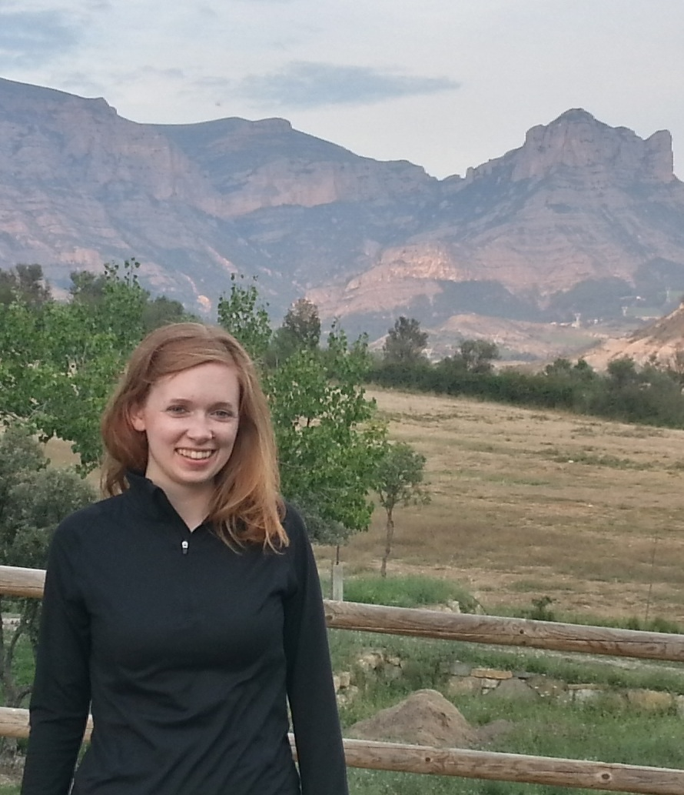

|  | Welcome! I am
currently a PhD candidate in the Department of Earth and
Planetary Sciences at Harvard University, working with Dan Schrag. Contact Information: Katie Dagon Department of Earth & Planetary Sciences Harvard University 20 Oxford Street Cambridge, MA 02138 kdagon[at]fas[dot]harvard[dot]edu Google Scholar profile ResearchGate |